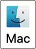

Refresh Your Macbook Touchbar.
Is your macbook touchbar frozen?
Got you covered.
Here is an app solves that for you, It is easily accessible on menu touch bar and can be configured to run on startup.
 Download
- Click download.
- Double click the downloaded zip file to extract.
- Double clik on the extracted .dmg
- Drag retouch.app to the Applications folder.
- wait for the process to finish
- eject the DMG (by clicking the eject button in the Sidebar)
- Open the app
- you should see the app Icon appear on the menu bar.
- Click on the I con and click Refresh Touchbar when needed.
- 🥳
- System Preferences > Users & Groups.
- Select your User ID.
- Select Login Items.
- Click the + button to select retouch app from your Applications folder.